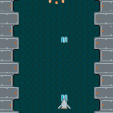

はじめに
前回は、背景を追加しました。今回は、敵の波状攻撃を実装します。
WaveとEmitter
UnityのチュートリアルにあるWave型とEmitterという仕組み自体は、phina.jsにはありませんので、似せた処理を作ります。
Wave機能の実現
UnityのWave型を参考にして、以下の仕様にします。
- 敵をフォーメーションで出現させる。
- 敵が全て倒されるか、画面外に出たら1に戻る。
クラスにしても良いのですが、親子関係の複雑化を避けるために、今回は関数を作ります。
createWave関数
// Wave作成
createWave: function() {
// 敵3機フォーメーション
[[0, -2], [-2, -4], [2, -4]].each(function(arr) {
var enemy = Enemy().addChildTo(this.waveGroup);
enemy.setPosition(this.gridX.center(arr[0]), this.gridY.span(arr[1]));
}, this);
},
- これまで敵はenemyGroupに追加してきましたが、新たにwaveGroupに追加します。
- 敵のフォーメーション情報を配列に入れて、ループでアクセスして敵を配置しています。
checkWave関数
// Waveの状態チェック
checkWave: function() {
// 敵がいなくなったら出現させる
if (this.waveGroup.children.length === 0) {
this.createWave();
}
},
- updateでこの関数を呼び出し、敵の状態をチェックします。
- 全ての敵が画面外に出るか、プレイヤーに倒されたらcreateWaveを呼び出して敵を出現させます。
敵が画面外で弾を撃たないようにする
敵の波状攻撃は実装できましたが、このままだと画面外にいる時から弾を発射できてしまいますので、画面に現れてから弾の発射を開始するように調整します。
// 一定間隔で弾を発射
this.tweener.clear()
.call(function() {
this.shot();
}, this)
.wait(shotDelay)
.setLoop(true);
// tweenerを一旦ポーズ
this.tweener.pause();
- pause関数で、tweenerの再生を一時停止します。
// 毎フレーム更新処理
update: function() {
// 画面に現れてから弾を発射するようにする
if (this.top > SCREEN_RECT.top && !this.tweener.playing) {
this.tweener.play();
}
- 画面に現れて、かつtweenerが再生中でなければ再生します。